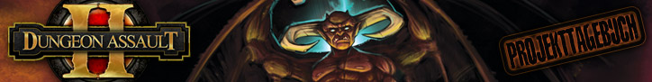

")
 Dungeon Assault II: Teil 1 - Bei FunOrb braut sich was zusammen
Dungeon Assault II: Teil 1 - Bei FunOrb braut sich was zusammen


7. Mai 2009 � Bei FunOrb braut sich was zusammen
Das erste Dungeon Assault (Kerkersturm) basiert auf einem grundlegenden Mechanismus, den wir bei FunOrb gerne benutzen: die Idee einer aktiven Offensive und einer reaktiven Defensive. Im Fall von Kerkersturm sind die R�uber die aktiven, offensiven Elemente und der Kerker die reaktive Verteidigung. Das Spielprinzip funktioniert sehr gut und war in Sachen Technologie eine ganz neue Richtung f�r uns. Kerkersturm war das erste FunOrb-Spiel, bei dem die Spielerprofile aktiv bleiben, auch wenn die Spieler selbst offline sind.
Kerkersturm war eine Bereicherung f�r FunOrb und hat vielen Spielern stundenlangen Spielspa� beschert. Ich pers�nlich war im R�ckblick allerdings nicht ganz zufrieden mit dem Endprodukt - ich wei�, dass es nicht alles ist, was wir aus der Idee h�tten machen k�nnen. Daher haben wir im Januar beschlossen, dem Spiel das zu geben, was es verdient: eine Fortsetzung!
Unser erstes Ziel war es, zu besprechen, was im Original nicht so gut funktioniert hat. "Es ist zu zuf�llig" war ein sehr h�ufiger Kommentar, ebenso "es hat nicht genug Tiefe". Wir wussten schon, dass das Spiel fesselnder sein und mehr Strategie beinhalten sollte. Schlie�lich f�hlte sich Kerkersturm an wie ein Brettspiel, was zwar bis zu einem bestimmten Punkt funktioniert hat, aber nicht das Spielerlebnis war, das wir uns erhofft hatten.
Wir haben uns dann damit befasst, was im Original gut funktioniert hat. Wir haben �u�erungen gesammelt wie zum Beispiel "es braucht nicht viel Zeit", "es gibt viel zu Erspielen", "es passiert auch was, wenn man nicht da ist" und "es kann unheimlich spannend sein". Damit hatten wir einen Plan f�r den Prototypen: er sollte Spieltiefe mit mehr Strategie und Interaktion bieten, aber trotzdem schnell aufzunehmen sein, viele Belohnungen haben, spannend sein und auch aktiv bleiben, wenn man nicht spielt.
Wir haben den Entwicklungsablauf f�r die Fortsetzung ausgearbeitet und ein Designdokument angelegt, an dem sich der Entwickler orientieren kann. Wir haben viele Spielmechanismen und Darstellungselemente getestet, damit das neue Spiel fesselnder, tiefgr�ndiger und weniger willk�rlich wird als das Original.
Au�erdem haben wir uns dem Problem mit dem 'Endspiel' von Dungeon Assault gewidmet, n�mlich, dass es keins zu geben scheint. Es hat einige Monate gedauert, um das Grunddesign des Spiels festzulegen und die Prototypen zu entwerfen, auf denen der Entwickler aufbauen wird. Das Design steht nun so weit fest, dass wir euch davon erz�hlen k�nnen.
In den n�chsten Tageb�chern lasse ich Mod Vile, den zust�ndigen Entwickler, zu Wort kommen. Er wird euch erz�hlen, wie wir die Kerkererstellung ver�ndern werden, wie die R�uber funktionieren und wie ihr die R�uber individuell steuern k�nnt. Schaut wieder vorbei, wenn ihr wissen wollt, wie wir aus Dungeon Assault II ein Spiel machen, das dem Originalkonzept gerecht wird.
Mod Korpz
Leiter von FunOrb